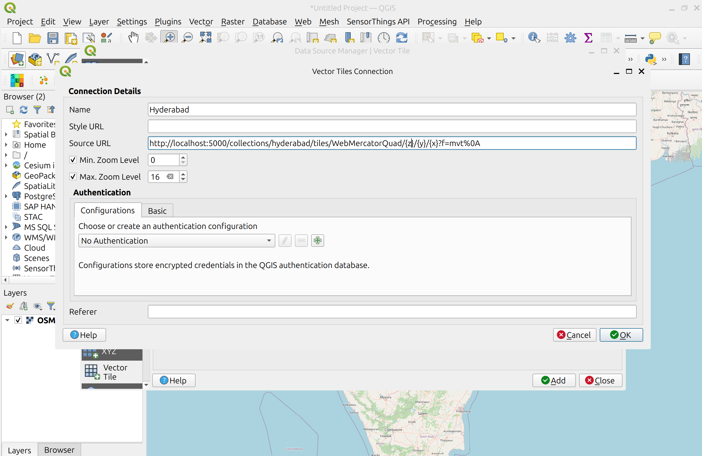
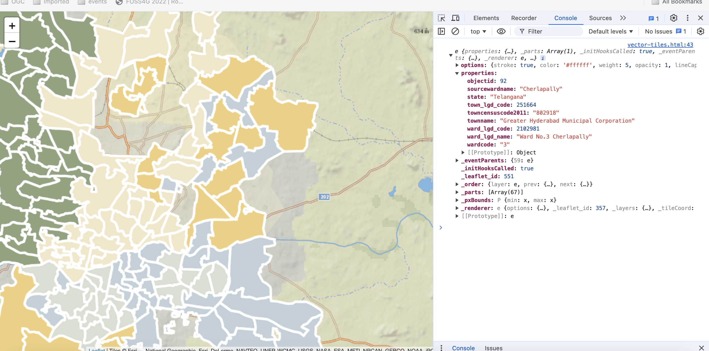

Exercício 5 - Tiles de dados geoespaciais via OGC API - Tiles
A OGC API - Tiles fornece uma API Web para disponibilizar tiles (ou mosaicos) de informação geoespacial. São suportadas diferentes formas de informação geoespacial, como tiles de elementos vetoriais ("vector tiles"), coverages, mapas (ou imagens) e, potencialmente, outros tipos de tiles de informação geoespacial. O standard está disponível neste documento:
Note
A OGC API - Tiles estende a estrutura de URL collections/* (os conjuntos de tiles são listados em /collections/example/tiles:
https://demo.pygeoapi.io/collections/lakes/tiles/WebMercatorQuad/{tileMatrix}/{tileRow}/{tileCol}?f=mvt
Suporte da pygeoapi
A pygeoapi suporta a especificação core da OGC API - Tiles e é capaz de anunciar um conjunto de tiles existente. Note que a própria pygeoapi não renderiza tiles a partir de dados de origem, mas suporta a publicação de tiles de diferentes fornecedores de backend.
Note
A estrutura de URL da OGC API - Tiles é compatível com camadas XYZ em bibliotecas comuns como OpenLayers, Leaflet e MapML.
Note
Consulte a documentação oficial para mais informações sobre os backends de tiles suportados.
Note
A pygeoapi atualmente suporta dois Tile Matrix Sets muito conhecidos: WorldCRS84Quad e WebMercatorQuad. A sua definição é publicada no ponto de extremidade /TileMatrixSets.
Publicar tiles vetoriais pré-renderizadas
Neste cenário, as tiles devem ser pré-renderizadas antes de serem servidas. O fornecedor MVT-tippecanoe permite servir tiles pré-renderizadas pelo tippecanoe, seja a partir de uma directoria no disco ou de um servidor estático (ex.: bucket S3 ou MinIO).
Para este exercício, irá publicar um conjunto de dados vetoriais dos limites dos bairros da corporação municipal da grande Hyderabad, a partir da localização abaixo:
- data:
workshop/exercises/data/hyderabad/greater_hyderabad_municipal_corporation_ward_Boundaries.geojson
Como primeiro passo vamos gerar as tiles, usando o tippecanoe:
Usar o tippecanoe para gerar tiles vetoriais
cd workshop/exercises
docker run -it --rm -v $(pwd)/data:/data emotionalcities/tippecanoe \
tippecanoe -r1 -pk -pf --output-to-directory=/data/tiles/ --force --maximum-zoom=16 \
--extend-zooms-if-still-dropping --no-tile-compression /data/hyderabad/greater_hyderabad_municipal_corporation_ward_Boundaries.geojson
cd workshop/exercises
docker run -it --rm -v ${pwd}/data:/data emotionalcities/tippecanoe tippecanoe -r1 -pk -pf --output-to-directory=/data/tiles/ --force --maximum-zoom=16 --extend-zooms-if-still-dropping --no-tile-compression /data/hyderabad/greater_hyderabad_municipal_corporation_ward_Boundaries.geojson
Note
Por favor, note que a ferramenta tippecanoe requer que o ficheiro de entrada esteja em WGS84, e produz sempre tiles em WebMercator.
Atualizar a configuração da pygeoapi
Abra a configuração da pygeoapi num editor de texto. Adicione uma nova secção de conjunto de dados da seguinte forma:
1 2 3 4 5 6 7 8 9 10 11 12 13 14 15 16 17 18 19 20 21 22 23 24 25 26 27 28 29 30 31 32 33 34 35 36 | |
Guarde o ficheiro e reinicie o Docker Compose. Navegue para http://localhost:5000/collections para avaliar se o novo conjunto de dados foi publicado.
Verificação adicional para os seguintes endpoints específicos de tiles na coleção hyderabad:
- links de tiles em http://localhost:5000/collections/hyderabad/tiles
- metadados de tiles em http://localhost:5000/collections/hyderabad/tiles/WebMercatorQuad/metadata

Publicar tiles vetoriais a partir do Elasticsearch
O Elasticsearch fornece um middleware que renderiza um índice dinamicamente, como tiles vetoriais. Este middleware também é suportado pelo backend mvt da pygeoapi.
Se quiser explorar a publicação de tiles vetoriais usando o Elasticsearch, clone o repositório pygeoapi-examples:
git clone https://github.com/geopython/pygeoapi-examples.git
git clone https://github.com/geopython/pygeoapi-examples.git
Depois, mude para a pasta docker/mvt-elastic:
cd docker/mvt-elastic
cd docker/mvt-elastic
Edite o script add-data.sh na pasta ES, adicionando estas duas linhas antes do fim:
1 2 | |
Acima, estamos a descarregar o greater_hyderabad_municipal_corporation_ward_Boundaries.geojson para dentro do container e a ingeri-lo num índice do Elasticsearch. Depois disto, precisamos de construir a imagem docker:
docker compose build
docker compose build
Edite a configuração docker.config.yml na pasta pygeoapi, adicionando este bloco de código antes do fim:
1 2 3 4 5 6 7 8 9 10 11 12 13 14 15 16 17 18 19 20 21 22 23 24 25 26 27 28 29 30 31 32 33 34 35 36 37 38 | |
Esta configuração permite a publicação do greater_hyderabad_municipal_corporation_ward_Boundaries.geojson como OGC API - Features e OGC API - Tiles.
Note
A API de pesquisa de tiles vetoriais do Elastic suporta níveis de zoom de 0 a 29.
Finalmente, inicie a composição docker, que irá descarregar e ingerir o conjunto de dados e publicá-lo na pygeoapi:
docker compose up
docker compose up
Note
Pode verificar o seu índice elastic em: http://localhost:9200/_cat/indices
Se estiver em produção, poderá querer fechar as portas do elastic no docker-compose.
Acesso do lado do cliente
QGIS
O QGIS suporta tiles Vetoriais da OGC API através da Camada de tiles Vetoriais. Embora a OGC API - Tiles não seja suportada nativamente, pode personalizar a ligação genérica para aceder a eles no QGIS.
Aceder a tiles Vetoriais da OGC API a partir do QGIS
Antes de entrar no QGIS, aceda à página de instalação da sua pygeoapi no navegador e siga estes passos.
- aceda à página da coleção do conjunto de dados de tiles: http://localhost:5000/collections/hyderabad
- navegue para a página de tiles clicando em
tiles: http://localhost:5000/collections/hyderabad/tiles - clique em
Tileset Metadata: http://localhost:5000/collections/hyderabad/tiles/WebMercatorQuad/metadata - Tome nota do URL template:
http://localhost:5000/collections/hyderabad/tiles/WebMercatorQuad/{tileMatrix}/{tileRow}/{tileCol}?f=mvte os valores de minZoom e maxZoom
Siga estes passos para se ligar a um serviço e aceder a tiles vetoriais:
-
localize o serviço de tiles vetoriais no painel do navegador do lado esquerdo. Note que também pode usar o menu superior e navegar para
Layer > Adicionar Layer > Adicionar Layer de Tiles Vetoriaiss -
clique com o botão direito para abrir o menu de contexto e escolha
Nova Ligação Genérica - preencha os valores necessários. Para URL, use o URL que anotou no passo anterior, substituindo
{tileMatrix}/{tileRow}/{tileCol}por{z}/{y}/{x}.

- pressione
OKpara adicionar o serviço. Neste ponto, deverá ver a ligação aparecer. Clique emAdicionarpara a adicionar ao mapa - Faça zoom para Hyderabad para visualizar o seu conjunto de dados


LeafletJS
O LeafletJS é uma biblioteca JavaScript popular para adicionar mapas interativos a websites. O LeafletJS não suporta explicitamente as OGC APIs, no entanto, pode interagir com a OGC API usando diretamente os resultados da API.
Adicionar OGC API - Tiles a um website com LeafletJS
- copie o HTML abaixo para um ficheiro chamado
vector-tiles.html, ou localize este ficheiro emworkshop/exercises/html - abra o ficheiro num navegador web
O código usa a biblioteca LeafletJS com o plugin leaflet.vectorgrid para exibir o serviço OGC API - Tiles de Hyderabad sobre um layer de base.
1 2 3 4 5 6 7 8 9 10 11 12 13 14 15 16 17 18 19 20 21 22 23 24 25 26 27 28 29 30 31 32 33 34 35 36 37 38 39 40 41 42 43 44 45 46 47 48 | |
Neste exemplo, as cores dos símbolos refletem o valor do atributo objectid.

Note
Pode verificar os atributos do layer, abrindo a consola nas ferramentas de developer. 
Tip
Tente adicionar um layer de tiles vetoriais da pygeoapi diferente atualizando o código em workshop/exercises/html/vector-tiles.html.
Se quiser renderizar as tiles do exemplo do Elasticsearch, pode consultar o código deste repositório aqui:
git clone -b ogcapi-ws https://github.com/emotional-cities/vtiles-example.git
git clone -b ogcapi-ws https://github.com/emotional-cities/vtiles-example.git

Tip
Consulte a documentação oficial da LeafletJS
OpenLayers
O OpenLayers é uma biblioteca JavaScript popular para adicionar mapas interativos a websites. O OpenLayers suporta nativamente a OGC API - Tiles (mapa e vetor). Pode verificar o código para o exemplo abaixo em: https://ogcincubator.github.io/ogcapi-tiles-demo/
Tip
Consulte a documentação oficial do OpenLayers
Resumo
Parabéns! Agora é capaz de publicar tiles na pygeoapi. Pode aprender mais sobre este Standard em: https://tiles.developer.ogc.org/